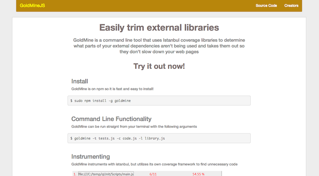
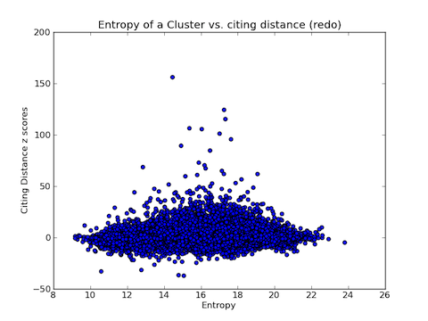

I am a student majoring in Computer Science and minoring in Mechanical Engineering at the University of Pennsylvania.
Created at 2013 Facebook New York Hackathon with Razzi Abuissa and Brian Sladek
 This open-source project used code coverage to determine excessive features in a javascript development library and remove them so that each time the webpage loads it will only have to load the parts of the library the developer actually needs.
 This past summer I worked on a research project under Professor Lyle Ungar involving the diffusion of key words across different genres of science literature. I used citation maps (example here) to try and prove the hypothesis that the citation distance of departments was longer if the department was more "unique." (the method of calculating the percieved uniqueness or entropy of a department is outlined in some of the source code).
Source Code -- Some of it is a little messy, it was my first experience with python
SolidWorks project done with Maanvi Singh and Kris Li
We chose to model this camera (which turned out to be the most difficult option) for a Mechanical Engineering course freshman year. Unfortunately, because there were so many individual parts and files, we were not able to do a nicer rendering, but we did manage to model the motion of the slinky like part at the beginning.